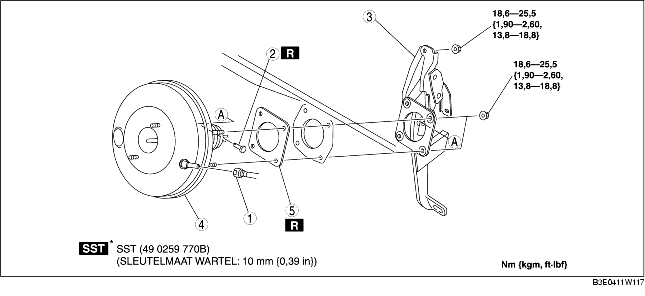

1. Voer de volgende procedure uit en plaats de koelslang (lagedrukzijde) zoals aangegeven in de afbeelding. (ZJ, Z6)
2. Voer de volgende procedure uit en beweeg de koelslang (lagedrukzijde) naar de onderzijde van de auto. (LF)
3. Verwijder de hoofdremcilinder. (Zie VERWIJDEREN/PLAATSEN HOOFDREMCILINDER.)
4. Verwijder de stekker van de remlichtschakelaar.
5. Verwijder het gaspedaal. (Zie VERWIJDEREN/PLAATSEN REMPEDAAL.)
6. Verwijder de onderdelen in de aangegeven volgorde, zie de tabel.
7. Plaats de onderdelen in omgekeerde volgorde.
8. Controleer het rempedaal na het plaatsen. (Zie CONTROLE REMPEDAAL.)
9. Stel de gaskabel af. (Zie CONTROLE/AFSTELLEN GASKABEL [ZJ, Z6].) (Zie CONTROLE/AFSTELLEN GASKABEL [LF].)

.
1. Verwijder de moeren van het rempedaal.
2. Verplaats de rembekrachtiger naar achteren.
3. Verwijder het rempedaal.